Linear Algebra for Machine Learning
Tai-Danae, Mesch
X/Google, 2021
Intro: Tensors!
The ML library we all use is called
Tensorflow, after those things from Linear Algebra. But
what are Tensors really?
Important, is what they are!
- In General Relativity, tensors describe Gravitation.
- In Quantum Mechanics, multi-particle states are the tensor products of single particle states.
- In Quantum Computing, each qubit is one factor of a tensor product.
- In Machine Learning ... well, those "tensors" in Tensorflow are just superficially connected with what they are in Mathematics -- we'll explain how exactly! -- but tensor products appear in interesting places when optimizing weight matrices in large models.
Remember to look at the notes.
Game Plan
Throughout the next 3 sessions:
- We explain what tensors are, and how the name became associated with multidimensional array data structures in software engineering, especially in machine learning.
- We contemplate how tensor products of vector spaces have a peculiar scaling behavior in their dimension: Unlike the Cartesian Product, which adds the dimensions of its factors, the Tensor Product multiplies. We also contemplate how confusing it is that $$ 2 + 2 = 2 \times 2 = 2^2 $$ and what happens when we go beyond 2.
- We finally look again how tensors and their products appear in machine learning models.
Meta
Besides the improved understanding of ML and QC, there are a few
tangential motivations that are inspiring in their own right, or for
building software:
- Understand better axiomatic construction.
- Introduce more Notation.
- Revisit learnings from new perspectives. (Remember the Tensorflow code retreat.)
- Introduce important mathematical concepts, such as Isomorphism and Duality.
How to follow along
How to use these slides:
- Find them at gmesch.github.io/math21/slides.html
- To follow the slides as shown by the presented, insert the query parameter ?follow=X into the URL (before the #, using the value for X announced by the presenter. This asks to allow notifications; please allow it (a Google Firebase mystery - this is needed even though no notifications will be shown).
- Press N to show speaker notes.
- May not work in your browser, your machine, or on your network connection. If so, please just follow on the video stream.
How to ask questions
How to ask questions on VC:
- TBD ...
I - Vectors and Tensors
Why, in software, arrays with multiple integer indices came to be called tensors.
Why, in software, arrays with multiple integer indices came to be called tensors.
Vectors and Tensors - Overview
Plan for today.
- Recap Axioms of Vector Space
- Einstein Notation
- Linear Independence gives rise to Basis and Coordinates
- Basis and Coordinate Transformations
- The Scalar Product $\leftarrow$ This is the first Tensor!
- Tensor Coordinates and Basis Transformations
Axioms of Vector Space
Recap what Vectors are, and Vector Spaces.
- Vectors can be added to each other and multiplied with scalar numbers.
- Scalar numbers are elements of a Field,
often
- Rational Numbers $Q$,
- Real Numbers $R$,
- or Complex Numbers $C$,
- but also finite fields, notably the Galois Field $GF(2)$.
Axioms of Vector Space
Every set $V$ whose elements can be added to each other, and
multiplied with elements from a field $F$, with the following
properties, is a vector space.
Vector Addition:
- is an operation from $V \times V$ on $V$: $\xvec{a} + \xvec{b} \in V$
- is associative: $(\xvec{a} + \xvec{b}) + \xvec{c} = \xvec{a} + (\xvec{b} + \xvec{c})$
- is commutative: $\xvec{a} + \xvec{b} = \xvec{b} + \xvec{a}$
- has a neutral element: $\exists \xvec{0} \; \forall \xvec{a} \,:\, \xvec{a} + \xvec{0} = \xvec{a}$
- has an inverse: $\forall \xvec{a} \; \exists -\!\xvec{a} \,:\, \xvec{a} + (-\xvec{a}) = \xvec{0}$
Scalar Multiplication:
- is an operation from $F \times V$ on $V$: $a\xvec{a} \in V$
- is compatible with Field multiplication: $a (b \xvec{a}) = (a b) \xvec{a}$
- has a neutral element: $1 \xvec{a} = \xvec{a}$
- is distributive over vector addition: $a \xvec{a} + a \xvec{b} = a (\xvec{a} + \xvec{b})$
- is distributive over field addition: $a \xvec{a} + b \xvec{a} = (a + b) \xvec{a}$
- $\forall$ is implied where absent in the axioms.
- technically in some terminolgy systems, scalar multiplication is not an operation but a function
Axioms of Vector Space - Examples
Two examples of what vector spaces are.
- Example 1: Arrows over Rational Numbers.
- Example 2: Tuples of Real Numbers over Real Numbers.
Axioms of Vector Space - Example: Arrows
Arrows in the 2D plane are vectors, with their operations defined
by Euclidean Geometry.
- Vector Addition
- Scalar Multiplication - negation
- Scalar Multiplication - integers
- Scalar Multiplication - integer fractions
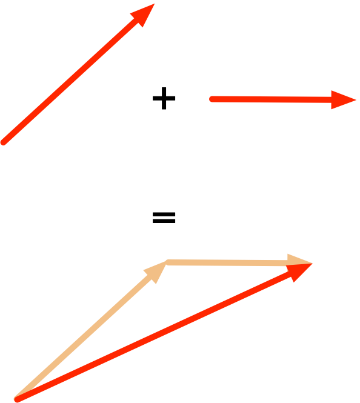
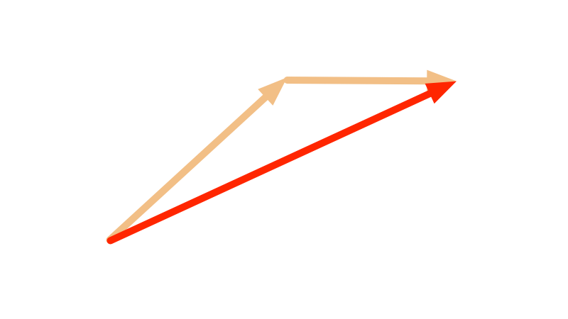
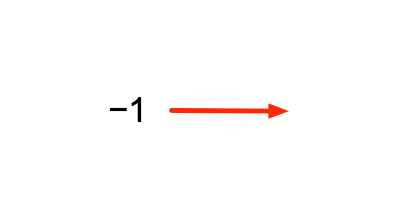
 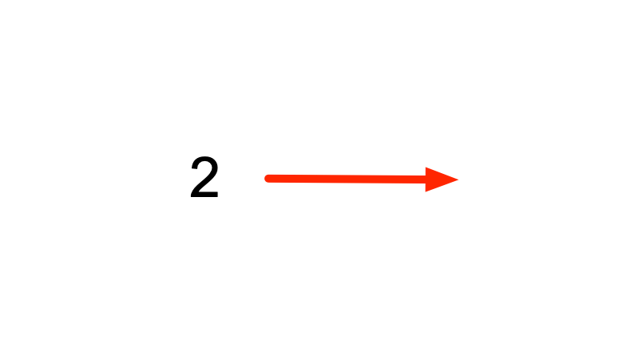
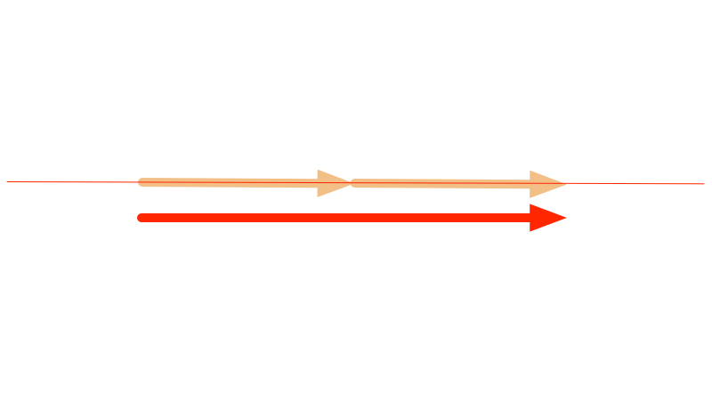
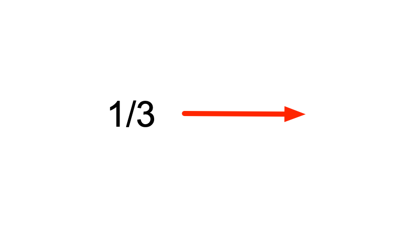
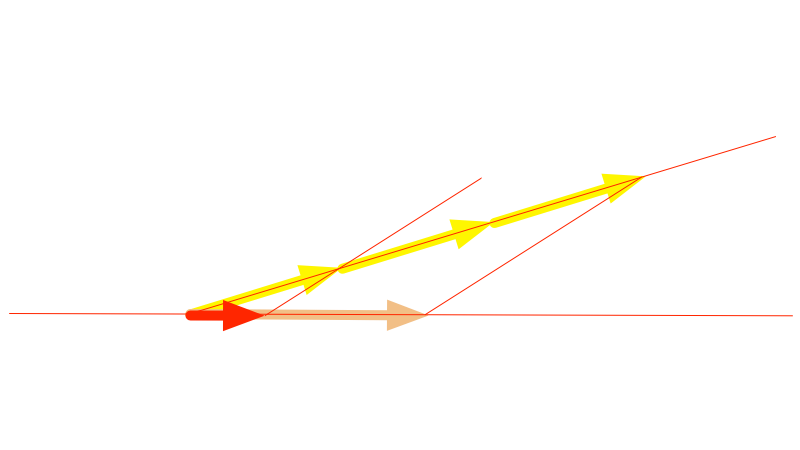
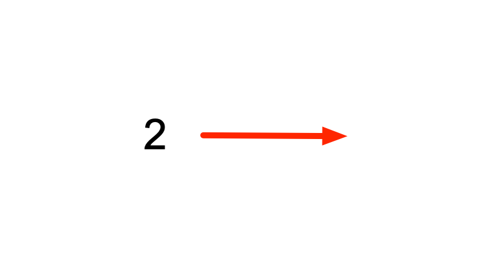
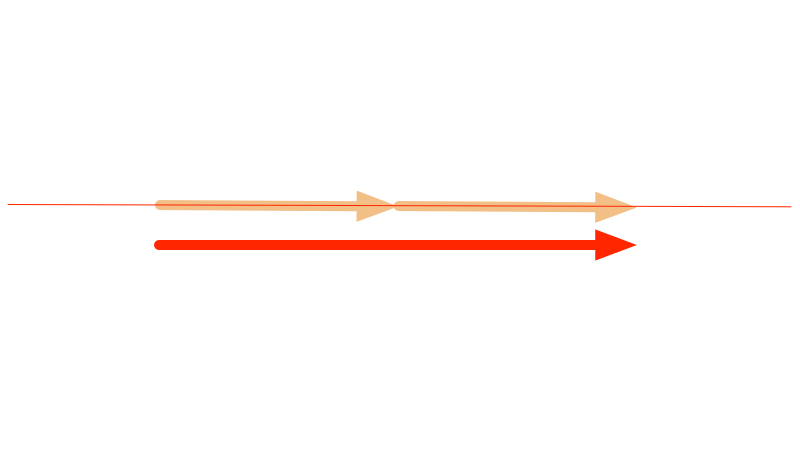
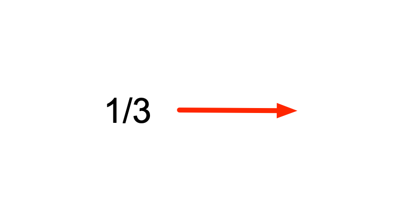
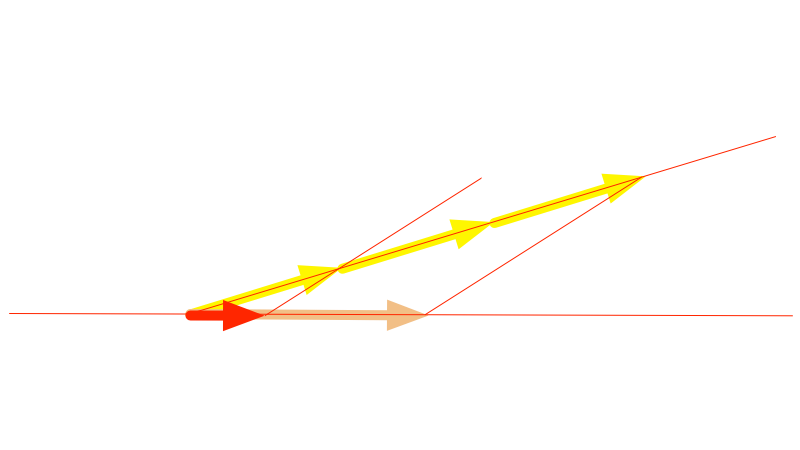
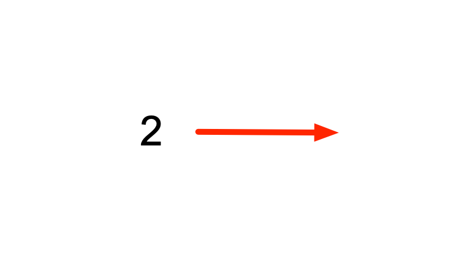
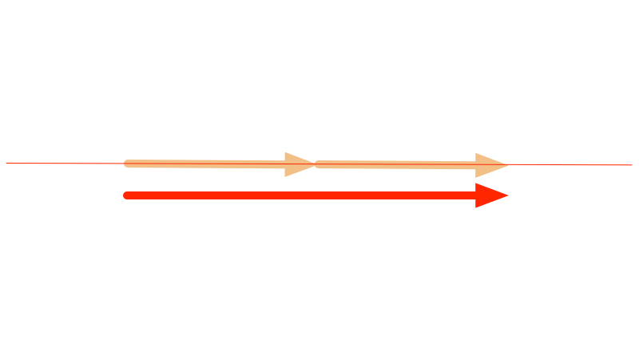
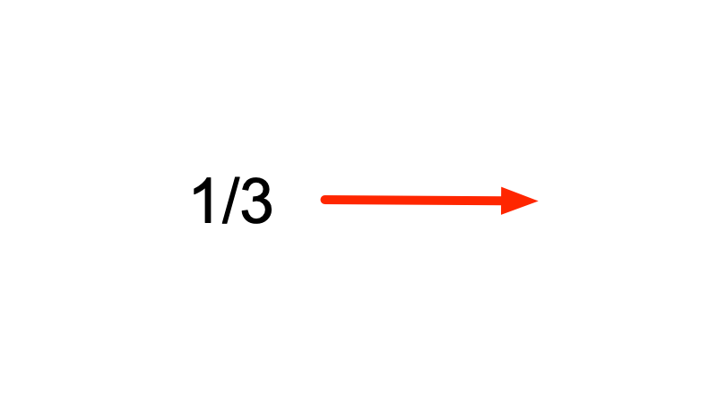
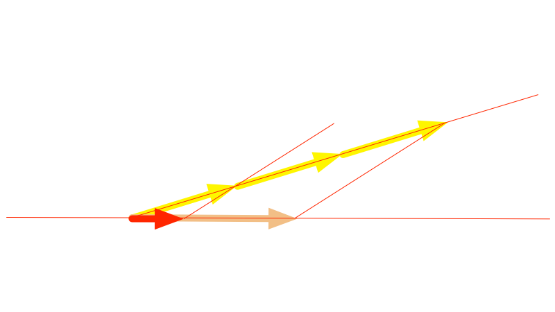
- All the operations are defined directly by operations in Euclidean geometry, not by the corresponding operations on coordinates.
Axioms of Vector Space — Example: Tuples
Tuples of rational or real numbers are vectors.
- $(1, 2) + (1, 2) = (2, 4)$
- $3 \times (1, 2) = (3, 6)$
Axioms of Vector Space — Exercise
Are these two examples vector spaces?
- (a) Tuples of Rational Numbers over Real Numbers?
- (b) Tuples of Real Numbers over Rational Numbers?
Axioms of Vector Space — Solution
Are these two examples vector spaces?
- (a) Tuples of Rational Numbers over Real Numbers? — No, violates first axiom of scalar multiplication.
- (b) Tuples of Real Numbers over Rational Numbers? — Tricky! Yes, but it's infinite-dimensional. We'll see how once we understand linear independence ...
Linear Independence
The existence of coordinates follows from the
axioms.
- This derivation leads to the introduction of coordinates.
- It follows directly form the algebraic structure introduced by the axioms.
- Vectors can be linearly combined, i.e. added up with weights $w_i$: $$\sum_{i} w_i \xvec{v}_i$$
- Can such combinations yield $\xvec{0}$ with coefficients that are not all $0$? (It's always possible with all coefficients 0, of course.)
- Vectors in the combination are then said to be linearly dependent.
- Otherwise they are linearly indedendent.
- The vectors $\xvec{v}_i$ in the sum are really multiple vectors (one for each index), not the coordinates of one vector — we get to coordinates later!
Linear Independence — Exercise
Imagine sets of arrows that are
- (a) linearly independent,
- (b) linearly dependent.
Linear Independence — Solution
Imagine sets of arrows that are
- (a) linearly independent,
- (b) linearly dependent.
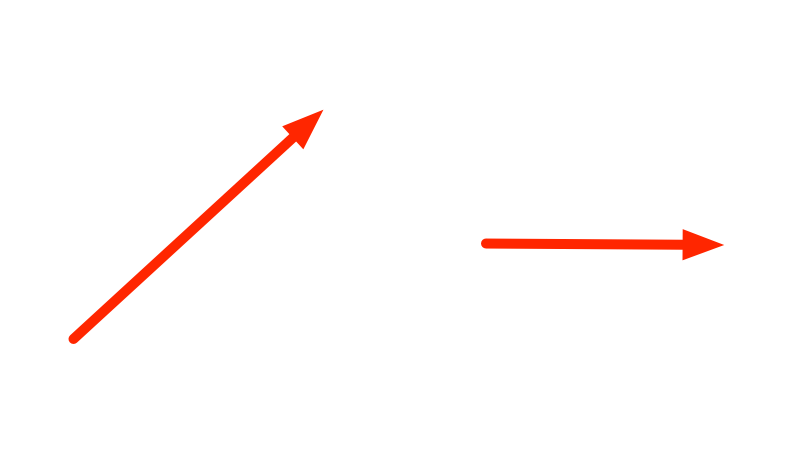
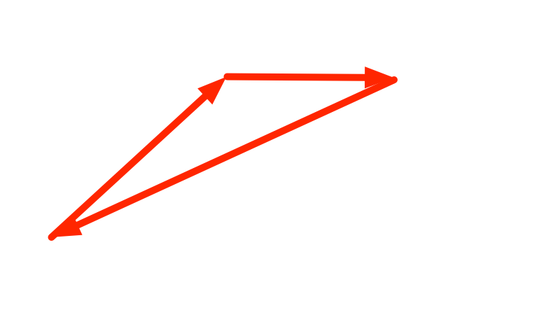
Einstein Notation
We introduce a notation for vector algebra that's very neat.
- Convention: $$w^i \xvec{v}_i := \sum_{i} w_i \xvec{v}_i$$
- If an index $i$ appears in a multiplication expression both as upper index $w^i$ and as lower index $\xvec{v}_i$, then the sum over the range of the index is implied.
- Also for multiple indices. (Will see this for tensors.)
Einstein Notation
- No sum for an index on its own: $$\xvec{v}_i$$ is simply a tuple of vectors. $$w^i$$ is simply a tuple of weights, i.e. numbers.
- No sum for a repeated index on top or bottom: $$M_{ii}$$ is the tuple of the diagonal elements of the matrix $M_{ij}$.
Linear Independence
More analysis yields interesting properties of linear independence.
- In each vector space, the maximum number of elements $\xvec{e}_i$ in a set of linearly independent vectors is fixed.
- For every other vector $\xvec{v}$ added to such a set, there is a linear combination that yields $\xvec{0}$: $$v^{i}\xvec{e}_{i} + v^{0}\xvec{v} = \xvec{0}$$
- Another way of saying this is that $\xvec{v}$ can be combined from $\xvec{e}_{i}$. With the same coefficients as above, and noticing that $v^{0}$ cannot be $0$: $$\xvec{v} = - \frac{v^{i}}{v^0} \xvec{e}_{i}$$ (Einstein notation applies.)
- Exercise:
- (a) why must be $v^{0} \neq 0$?
- (b) Why would it be a problem otherwise?
Linear Independence
One more property, and it all yields 3 important concepts.
- Write more simply; $$\xvec{v} = v^{i} \xvec{e}_{i}$$
- Are these coefficients unique?
- It turns out yes they are!
- Proof follows, to show how such things work ...
Linear Independence
Proof that the coefficients of any vector are unambiguous.
- Assume there are two such sets of coefficients: $$\xvec{v} = v^{i} \xvec{e}_{i} = u^{i} \xvec{e}_{i}$$
- subtract one from the other: $$\xvec{v} - \xvec{v} = v^{i} \xvec{e}_{i} - u^{i} \xvec{e}_{i}$$ $$\xvec{0} = (v^{i} - u^{i}) \xvec{e}_{i}$$
- Now remember that $\xvec{e}_i$ are linearly independent and that means $\xvec{0}$ can be combined only with all coefficients $0$.
Linear Independence
- Thus for all $i$: $$v^{i} - u^{i} = 0$$ (No Einstein sum here.)
- Or: $$v^{i} = u^{i}$$ QED.
- Thus, every vector in the vector space can be represented as a combination with unambiguous coefficients from any maximal set of lineary independent vectors.
Dimension, Basis, and Coordinates
From the concept of Linear Indepdendece, we arrive
at 3 Definitions:
- The maximum number of elements in a set of linearly independent vectors of a vector space is the Dimension of that vector space.
- Any such set itself is a Basis of that vector space.
- The coefficients in the linear combination of the basis vectors that yields a vector are the Coordinates of the vector in that basis.
Coordinate Tuples vs $F^n$ Vectors
- Once a basis is picked, every vector is represented by a tuple of coordinates.
- The tuples are elements of $F^n$, the cartesian product space of the scalar field.
- The field $F$ by its own axioms has addition and multiplication defined. The cartesian product naturally has addition and scalar multiplication — $F^n$ is a vector space too!
- This vector space is isomorphic to the original vector space, which often misleads us to think that vectors just are tuples of numbers.
- The mapping of the vectors to its coordinate tuples is called an Isomorphism. There are many such mappings, one for each basis of the vector space.
- Isomorphism is pervasive in Mathematics, and it's the reason we can often afford to be "sloppy" when we speak.
Coordinate Tuples vs $F^n$ Vectors — Exercise
- Define two different bases in $R^2$, and compute the coordinates of one vector in both bases.
Coordinate Tuples vs $F^n$ Vectors — Solution
Define two different bases in $R^2$, and compute the
coordinates of one vector $\left[ \begin{array}{c} 1 \\ 1
\end{array} \right]$ in both bases.
-
Basis 1: $\{ \left[ \begin{array}{c} 1 \\ 0 \end{array} \right], \left[ \begin{array}{c} 0 \\ 1 \end{array} \right] \}$Basis 2: $\{ \left[ \begin{array}{c} 1 \\ 1 \end{array} \right], \left[ \begin{array}{c} 0 \\ 1 \end{array} \right] \}$
-
Vector in Basis 1: $\left[ \begin{array}{c} 1 \\ 1 \end{array} \right] = 1 \left[ \begin{array}{c} 1 \\ 0 \end{array} \right] + 1 \left[ \begin{array}{c} 0 \\ 1 \end{array} \right]$Vector in Basis 2: $\left[ \begin{array}{c} 1 \\ 1 \end{array} \right] = 1 \left[ \begin{array}{c} 1 \\ 1 \end{array} \right] + 0 \left[ \begin{array}{c} 0 \\ 1 \end{array} \right]$
Basis Transformation
Let's consider two different bases
$\{\xvec{a}_{i}\}$ and $\{\xvec{b}_{i^\prime}\}$ in the same vector
space.
- Notation: Symbols with differently primed indices refer to different objects. Thus $\xvec{a}_{i}$ is a different vector from $\xvec{a}_{i^\prime}$ even for equal values of $i$ and $i^\prime$.
- Every vector $\xvec{v}$ of the vector space has coordinates in the first base $\{\xvec{a}_{i}\}$ as well as in the second base $\{\xvec{b}_{i^\prime}\}$ : $$\xvec{v} = v^{i} \xvec{a}_{i} = v^{i^\prime} \xvec{b}_{i^\prime}$$
- The vectors ${\xvec{b}_{i^\prime}}$ of the second basis too have coordinates in the first base ${\xvec{a}_{i}}$. Let's call $T_{i^\prime}^{i}$ the coordinates of $\xvec{b}_{i^\prime}$ in the basis ${\xvec{a}_{i}}$: $$\xvec{b}_{i^\prime} = T_{i^\prime}^{i} \xvec{a}_{i}$$
- Notation: We could write $T$ as a matrix. But we don't, and stick to Einstein notation instead. We'll see later why — with tensors, will multiply such objects on "more than two sides".
Basis Transformation
- Conversely, the vectors of the first basis $\{\xvec{a}_{i}\}$ also have coordinates in the second basis $\{\xvec{b}_{i^\prime}\}$ just like every vector too: $$\xvec{a}_{i} = T_{i}^{i^\prime} \xvec{b}_{i^\prime}$$
- Notation: the indices on $T_{i}^{i^\prime}$ and $T_{i^\prime}^{i}$ are different, so the note from the previous slide applies, and these are different objects.
Basis Transformation
- So the two sets of coordinates $T_{i}^{i^\prime}$ and $T_{i^\prime}^{i}$ are different, but they are related, as we see from inserting one equation into the other: $$\xvec{a}_{i} = T_{i}^{i^\prime} \xvec{b}_{i^\prime}$$ $$\xvec{a}_{i} = T_{i}^{i^\prime} T_{i^\prime}^{j} \xvec{a}_{j}$$
- thus: $$T_{i}^{i^\prime} T_{i^\prime}^{j} = \delta_{i}^{j} \;\;\mathrm{where}\;\; \delta_{i}^{j} = 1 \; (i=j), \; 0 \; (i \neq j)$$
- The two matrices $T_{i}^{i^\prime}$ and $T_{i^\prime}^{j}$ are each other's inverse.
- Notation: we don't have to care about transpose or ordering of factors.
Basis Transformation
- We can ask about the relationship of the coordinates of a vector too: $$\xvec{v} = v^{i} \xvec{a}_{i} = v^{i^\prime} \xvec{b}_{i^\prime}$$ $$\xvec{v} = v^{i} \xvec{a}_{i} = v^{i^\prime} T_{i^\prime}^{i} \xvec{a}_{i}$$
- thus: $$v^{i} = T_{i^\prime}^{i} v^{i^\prime} \;\; \mathrm{and\;remember} \;\;\ \xvec{a}_{i} = T_{i}^{i^\prime} \xvec{b}_{i^\prime}$$
- ... basis vectors and coordinates transform inverse (and transposed) to each other.
- Notation: again ordering of factors is not important for meaning, unlike in matrix notation.
Basis Transformation
We now can define:
- $T$ is called a basis transformation,
- and correspondingly a coordinate transformation.
Basis Transformation — Exercise
- Write down the basis transformation and the coordinate transformation for the transition between Basis 1 and Basis 2 in the previous exercise.
Basis Transformation — Solution
Write down the basis transformation and the coordinate
transformation for the transition between Basis 1
and Basis 2 in the previous exercise.
Vector:
$$\xvec{v} = \left[ \begin{array}{c} 1 \\ 1 \end{array} \right]$$
Basis 1:
$$\begin{array}
\xvec{e}_1 = \left[ \begin{array}{c} 1 \\ 0 \end{array} \right] &&
\xvec{e}_2 = \left[ \begin{array}{c} 0 \\ 1 \end{array} \right]
\end{array}$$
Basis 2:
$$\begin{array}
\xvec{e}_{1^\prime} = \left[ \begin{array}{c} 1 \\ 1 \end{array}
\right] &&
\xvec{e}_{2^\prime} = \left[ \begin{array}{c} 0 \\ 1 \end{array}
\right]
\end{array}$$
Basis Transformation — Solution
Vector expressed in both bases:
Vector in Basis 1:
$$\xvec{v} = v^i\xvec{e}_i =
1 \left[ \begin{array}{c} 1 \\ 0 \end{array} \right] +
1 \left[ \begin{array}{c} 0 \\ 1 \end{array} \right]$$
$$v^1 = 1, \; v^2 = 1$$
Vector in Basis 2:
$$\xvec{v} = v^{i^\prime}\xvec{e}_{i^\prime} =
1 \left[ \begin{array}{c} 1 \\ 1 \end{array} \right] +
0 \left[ \begin{array}{c} 0 \\ 1 \end{array} \right]$$
$$v^1 = 1, \; v^2 = 0$$
Basis Transformation — Solution
Basis transformation written down:
$$\xvec{e}_{i^\prime} = T_{i^\prime}^{i} \xvec{e}_{i}$$
$$\xvec{e}_{1^\prime} = \left[ \begin{array}{c} 1 \\ 1 \end{array}
\right] =
1 \left[ \begin{array}{c} 1 \\ 0 \end{array} \right] +
1 \left[ \begin{array}{c} 0 \\ 1 \end{array} \right] =
1 \xvec{e}_{1} +
1 \xvec{e}_{2}$$
$$\xvec{e}_{2^\prime} = \left[ \begin{array}{c} 0 \\ 1 \end{array}
\right] =
0 \left[ \begin{array}{c} 1 \\ 0 \end{array} \right] +
1 \left[ \begin{array}{c} 0 \\ 1 \end{array} \right] =
0 \xvec{e}_{1} +
1 \xvec{e}_{2}$$
$$
\begin{array}{c}
T_{1^\prime}^{1} = 1 &&
T_{1^\prime}^{2} = 1 \\
T_{2^\prime}^{1} = 0 &&
T_{2^\prime}^{2} = 1
\end{array}$$
Basis Transformation — Solution
- Coordinate Transformation: $$v^{i^\prime} = T_{i}^{i^\prime} v^{i}$$ $$T_{i}^{i^\prime} T_{i^\prime}^{j} = \delta_i^j$$ $$ T_{1}^{1^\prime} = ?, \; T_{1}^{2^\prime} = ?, \; T_{2}^{1^\prime} = ?, \; T_{2}^{2^\prime} = ? \; $$ TODO
Scalar Product and Metric Tensor
Let's look at the scalar product in Vector Spaces.
- The scalar product is a map from the vector space to its scalar field: $$\xvec{v} \cdot \xvec{w} = a \in F$$
- linear: $$(a \xvec{v}) \cdot \xvec{w} = a (\xvec{v} \cdot \xvec{w})$$ $$(\xvec{v} + \xvec{u}) \cdot \xvec{w} = \xvec{v} \cdot \xvec{w} + \xvec{u} \cdot \xvec{w}$$
- commutative: $\xvec{v} \cdot \xvec{w} = \xvec{w} \cdot \xvec{v}$
- regular: $\forall \xvec{v} \neq \xvec{0} \; \exists \xvec{w}: \xvec{v} \cdot \xvec{w} \neq 0$
- For vector spaces over Complex Numbers, the scalar product is hermitean instead of commutative.
- For "normal" vector spaces, the scalar product is also required to be positive definite.
Scalar Product and Metric Tensor
We are on the way to define the first tensor.
- The vectors can be written with coordinates in a basis $\{\xvec{e}_{i}\}$: $$\xvec{v} \cdot \xvec{w} = (v^{i}\xvec{e}_{i}) \cdot (w^{j} \xvec{e}_{j})$$
- ... using the linearity of the scalar product yields: $$\xvec{v} \cdot \xvec{w} = v^{i} w^{j} (\xvec{e}_{i} \cdot \xvec{e}_{j})$$
- The scalar products of the basis vectors are just numbers. We call them $g$: $$g_{ij} := \xvec{e}_{i} \cdot \xvec{e}_{j}$$
- ... then: $$\xvec{v} \cdot \xvec{w} = v^{i} w^{j} g_{ij}$$
Scalar Product and Metric Tensor
$$\xvec{v} \cdot \xvec{w} = v^{i} w^{j} g_{ij}$$
- For a given basis, these numbers $g_{ij}$ fully define the scalar product in the vector space; they are the coordinates of the bilinear map that is the scalar product.
- We call them coordinates because they work like coordinates of vectors: The object they describe is not those numbers, it's a map of vectors to scalar numbers, just like the vectors are not their coordinates. But once vectors are described by coordinates relative to a basis, the map is described by coordinates too
Scalar Product and Metric Tensor — Exercise
Write down the coordinates of the scalar product for tuples from
$R^2$ in the two bases from the previous exercise.
Scalar Product and Metric Tensor — Solution
Write down the coordinates of the scalar product for tuples from
$R^2$ in the two bases from the previous exercise.
- ... TODO
Scalar Product and Metric Tensor
Two interesting questions arise, both of which lead to the definition of tensors:
- (1) What are the coordinates of the scalar product in another basis?
- (2) What are the "basis vectors" of whom the coordinates are the coefficients?
Scalar Product and Metric Tensor — Coordinate Transformation
What are the coordinates of the scalar product in another
basis? Lets see ...
- $\xvec{v} \cdot \xvec{w} = (v^{i}\xvec{e}_{i}) \cdot (w^{j} \xvec{e}_{j})$
- $\xvec{v} \cdot \xvec{w} = (v^{i^\prime}\xvec{e}_{i^\prime}) \cdot (w^{j^\prime} \xvec{e}_{j^\prime})$
- $\xvec{v} \cdot \xvec{w} = (v^{i^\prime} T_{i^\prime}^{i} \xvec{e}_{i}) \cdot (w^{j^\prime} T_{j^\prime}^{j} \xvec{e}_{j})$
- $\xvec{v} \cdot \xvec{w} = v^{i^\prime} w^{j^\prime} \; T_{i^\prime}^{i} T_{j^\prime}^{j} \; (\xvec{e}_{i} \cdot \xvec{e}_{j})$
- $\xvec{v} \cdot \xvec{w} = v^{i^\prime} w^{j^\prime} \; T_{i^\prime}^{i} T_{j^\prime}^{j} \; g_{ij}$
- $\xvec{v} \cdot \xvec{w} = v^{i^\prime} w^{j^\prime} \; g_{i^{\prime}j^{\prime}}$
- thus, $g_{i^{\prime}j^{\prime}} = T_{i^\prime}^{i} T_{j^\prime}^{j} \; g_{ij}$
Tensors
We can now give a definition of a Tensor, and of the Tensor
Product Space.
- A Tensor is any mathematical object in a vector space with coordinates that transform under basis transformations like a multilinear map.
- The scalar product is just one such map. There are many others.
- These maps can be combined and multiplied with numbers: $$(g + h)(\xvec{a}, \xvec{b}) := g(\xvec{a}, \xvec{b}) + h(\xvec{a}, \xvec{b})$$ $$(ag)(\xvec{a}, \xvec{b}) := a \cdot g(\xvec{a}, \xvec{b})$$
- Looking closely, they form a vector space too!
- The Tensor Product Space of $V$ is the vector space comprised of tensors in $V$: $$g,h \in V \otimes V$$
- Linear maps with more than two arguments are from tensor product spaces with more than two factors: $$V \otimes V \otimes V \otimes ...$$
Scalar Product and Metric Tensor
Now that we have defined Tensors, a few more Definitions.
- A vector space over real numbers with a scalar product is a Euclidean Vector Space.
- Two vectors from a Euclidean Vector Space whose scalar product is $0$ are Orthogonal.
- If the scalar product is positive definite (not always the case), then he scalar product also gives rise to a Norm: $$|\xvec{x}| = \sqrt{\xvec{x} \cdot \xvec{x}}$$
- The Angle $\phi$ between two vectors $\xvec{x}$ and $\xvec{y}$ is defined by $$\cos \phi = \frac{\xvec{x} \cdot \xvec{y}}{\sqrt{\xvec{x} \cdot \xvec{x}} \sqrt{\xvec{y} \cdot \xvec{y}}}$$
Scalar Product and Metric Tensor
- Because the scalar product defines both distance and direction in a Euclidean Vector Space, i.e. the Metric, and is a tensor, it's called the Metric Tensor.
- In Riemann Geometry, the metric tensor is given in every point in space, i.e. it's a tensor field.
- In General Relativity, the metric tensor is connected to the mass by a partial differential equation.
Don't confuse a tensor field with a field.
Higher Order Tensors
- Tensor Product Spaces of $V$ arise from multilinear maps in the same way, e.g.: $$V \otimes V \otimes V \otimes V$$
- Such tensors have coordinates with as many indices: $$g_{ijkl}$$
- that transform under a basis transformation: $$g_{i^{\prime}j^{\prime}k^{\prime}l^{\prime}} = T_{i^\prime}^{i} T_{j^\prime}^{j} T_{k^\prime}^{k} T_{l^\prime}^{l} g_{ijkl}$$
- Natural question: What's the dimension of that space, and what is its basis?
Tensor Bases
We answer the second of those questions first, and the
first in the next session ...
- Given a basis ${\xvec{e}_i}$ in $V$, we define a basis in $V \otimes V$ as follows: $${\xvec{e}^i \otimes \xvec{e}^j}$$
- is the bilinear function of two vectors from $V$ such that $$(\xvec{e}^i \otimes \xvec{e}^j)(\xvec{e}_k, \xvec{e}_l) = \delta^i_k \delta^j_l$$
- then a bilinear map $g$ with coordinates $g_{ij}$ is given by $$g = g_{ij} \, \xvec{e}^i \otimes \xvec{e}^j$$
Tensor Bases
- $g(\xvec{x}, \xvec{y}) = g_{ij} (\xvec{e}^i \otimes \xvec{e}^j)(x^k \xvec{e}_k, y^l \xvec{e}_l)$
- $g(\xvec{x}, \xvec{y}) = g_{ij} x^k y^l (\xvec{e}^i \otimes \xvec{e}^j)(\xvec{e}_k, \xvec{e}_l)$
- $g(\xvec{x}, \xvec{y}) = g_{ij} x^k y^l \delta^i_k \delta^j_l$
- $g(\xvec{x}, \xvec{y}) = g_{ij} x^i y^j$
- as we said earlier.
Summary
- Vectors can be added and multiplied.
- From that follows they have coordinates wrt a basis.
- Tensors are multilinear functions of vectors.
- They are themselves vectors (can be added and multiplied), and thus have coordinates wrt a basis.
- The basis and coordinates of the tensors are related to the basis of and coordinates of the vectors they are functions of.
- The coordinates of tensors are indexed by tuples of indexes, one from each tensor product factor. Hence the name tensor in software engineering for muli-dimensional arrays.
Conclusion
Back to the question we started with: Vector and tensor
data structures in software engineering.
- Data structures that are collections indexed by integers are known as vectors and in the tensorflow library as tensors.
- However, if for such collections there is no addition defined and no multiplication by scalars, then they are not vectors in the linear algebra sense.
- They took their name because of the important property of vectors to be described by tuples of scalar numbers, called coordinates.
Next
- We look at the dimension of tensor product spaces, and how tensor products appear in Quantum Computing, but also in data structures in Software Engineering.